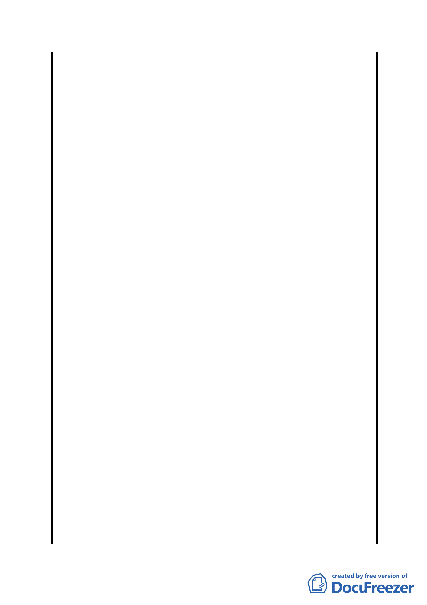

軍營是阻礙我們發展的最大障礙，南港 202 兵工廠都能
搬，這早已喪失隱密性的軍營更沒有不搬遷的理由。
於是我們提出軍營搬遷，規劃一個佔地 4 公頃，同時擁
有運動公園、生態貯留池、綠建築室內活動中心的文山
區辛亥門戶公園。
2.不要軍營，要三贏
當軍營變成門戶公園時，將會有三贏的畫面出現：
水利贏－創造都會公園與生態環保工法之防洪設施，做
為台北市的表率。
市民贏－門戶公園內，擁有運動場、生態池、環池步道、
自行車道、綠建築室內活動空間，平日可舉辦親子、藝
文等大型活動，可讓捷運站週邊鄰里五千多戶居民同時
享用，創造生活休憩的重要活動樞紐。
市府贏－因為地貌變了，且搭配即將完成的墳墓遷移，
促進辛亥捷運站聯合開發案的順利完成。而原本老舊的
住宅，將會有更多人願意投入都市更新，強化本地之生
活便捷機能，達成郝市長〝台北好好看〞的目標
3.市府已有正面回應
自去年下半年至今，我們已向市府陳情要求修改都市計
劃，並於市府召開數次會議，獲得多位審議委員支持，
且於第二次正式會議記錄列出五點結論，重點即是本區
都市計劃，應考慮辛亥捷運站資源連接，貯留池亦應尊
重水利專家意見，重新規劃並提出替代方案，作為台北
市之示範點。接下來就看我們居民的力量了，力量越強，
市府的規劃就會越接近我們的理想。
4.理想的完成，需要您的參與
有鄰居可能會說，先做貯留池吧，軍營慢慢再來，這是
一廂情願為市府舊方案作稼的想法，因為水泥箱的貯留
池是不能做的，加上興建位置不適宜也無法完全解決興
德路積水問題，錯誤的決策比貪污還嚴重，它會對環境
造成更大的傷害，且當它完成時，我們還有什麼理由請
軍營搬遷呢？
中埔山因為大家的踴躍參與及支持，讓建地在兩年內成
功變為公園用地，辛亥門戶公園的創造，更需要你的加
入及行動，讓我們一起為居住的環境創造”前有水、後
有山”的美麗山城，建構出鄰里共榮的大型都會公園。
中埔山步道協會、辛亥生活圈行動聯盟
水泥工法貯留池 vs 生態工法貯留池
- 38 -